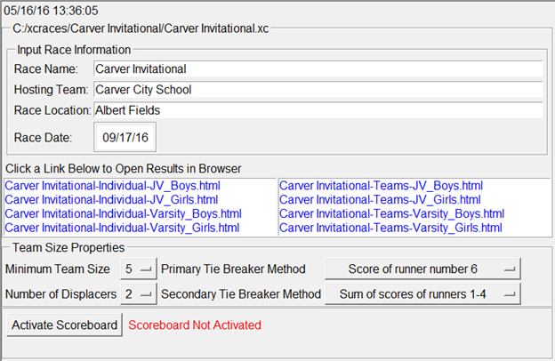
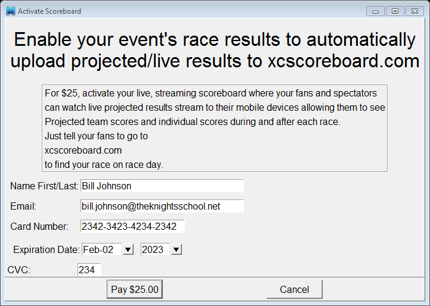
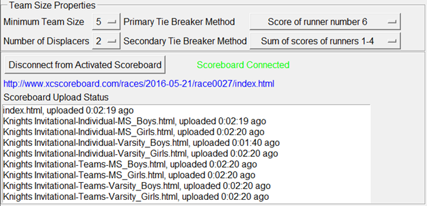
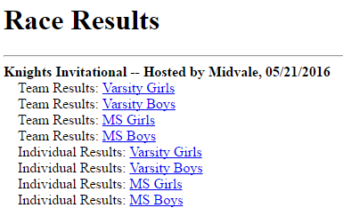
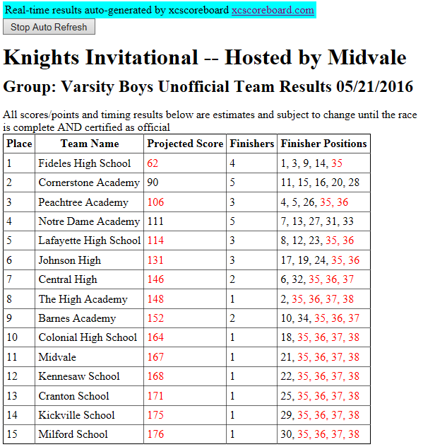
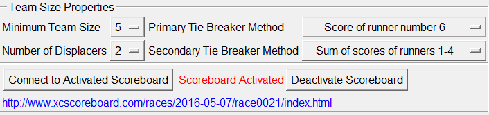

Config Page

- General Race Information (Input Race Information)
This is where you configure event wide specifics in the “Input Race Information” group by entering the Race Name, Hosting Team, Race Location and Race Date. This data is used to create the identifying data in the race results file’s headings. The full race file name is also displayed just below the time in the top left of the page.
- Result Files Selection (Click a Link Below to Open Results in Browser)
Initially an empty team results html file is created and listed in the results window. Simply click on the filename to open it in your default browser. As results are generated throughout the race, the individual results files are also generated and listed for selection.
- Team Size and Tie Breaker Configuration (Team Size Properties)
For most high school races leave the default settings in the “Team Size Properties” group (college races may need to change the tie breaker methods). However, you can change these settings to your desired needs, e.g., if you have a race with few full teams of 5 and want to reduce the minimum size to 4 to create a more competitive environment. Note that these settings are event wide and apply to all groups. If a specific group needs to have different race properties that others, please use save the race file to a different name in the same folder and use both race files for the event. One race file can then have a different configuration properties, but both will still publish to the same connected scoreboard (if activated in the next step)
- Activating the Online Streaming Scoreboard
The Online Streaming Scoreboard is one of the key features of xcscoreboard. When activated (for a small fee), an online, mobile device friendly, scoreboard is automatically created just for your event. Simply connect to your scoreboard and your projected race scores will be automatically streamed to your scoreboard as the race is scored. Race fans can connect to the scoreboard at http://xcscoreboard.com where they will see the projected scores stream by as racers finish and final scores once the race is certified as finished by the timing operator.
To activate and register for an online streaming scoreboard, simply click the “Activate Scoreboard” button and follow the instructions.
- Note: you must have an internet connection in order to activate the scoreboard.
- Note: Your credit card charge will be listed on your statement with the vendor as www.xcscoreboard.com
- Note: You cannot activate a scoreboard until you are within 2 weeks from your race date (but you can activate it on race day if you wish). Also you cannot activate a scoreboard for a race in the past. Once you successfully activate your scoreboard, it is immediately available for use and your event’s race date is locked in and cannot be changed:

After your scoreboard is activated, your race is added to the list of races found at http://www.xcscoreboard.com. Also xcscoreboard will be automatically connected to your scoreboard. You will also see a selectable, direct link to your event’s scoreboard and an upload status of existing results files showing the main index.html and existing result files that have already been recently uploaded to your scoreboard. See the following example:

After activation and connection, feel free to begin “sample” scoring your race to verify that results are automatically streamed in real-time and that you can view the sample results from xcscoreboard.com in your web browser. Your scoreboard remains active until the morning AFTER race day.
Here is a sample of the main index of the scoreboard created above as shown in a web browser:

And here is a sample of the “Team Results” page with 40 current finisher across 15 teams:

Subsequent launches of xcscoreboard using this race file (up until the day of the race) will bring up the Config page with a disconnected, but activated scoreboard:

Simply press the “Connect to Activated Scoreboard” button to re-connect to your scoreboard. If you forget to connect, your race results will not be streamed to your scoreboard.
- Note that the day after the race, your scoreboard is automatically deactivated.
- Note that pressing the “Deactivate Scoreboard” button will force a scoreboard deactivation and change the race file configuration back to having no scoreboard (allowing you to change the race date). Rarely would you want to do this, but it is an option if you want to copy the race file for configuring a different race on a different date.
- Note that you can copy the race file to a different name and use each file separately on race day to connect to the same scoreboard and score different races. For example, say you are hosting the “Knights Invitational”, but you want to score the Varsity races in a separate file than the JV races (maybe they have different team size rules. To do this:
- Make sure the Race Name is correct and in general form (Knights Invitational) when you activate your race. This locks in your race name on the main page of xcscoreboard.com. This name will not change.
- After successful activation, choose File → Save as and save the race file under a different name in the same race folder.
- For one race file change the Race Name to “Knights Invitational – Varsity Races” and for the other race file change the Race Name to “Knights Invitational – JV Races”. And use each race file to score their corresponding race. Both will separately connect and upload their appropriate race results to the event scoreboard named “Knights Invitational”